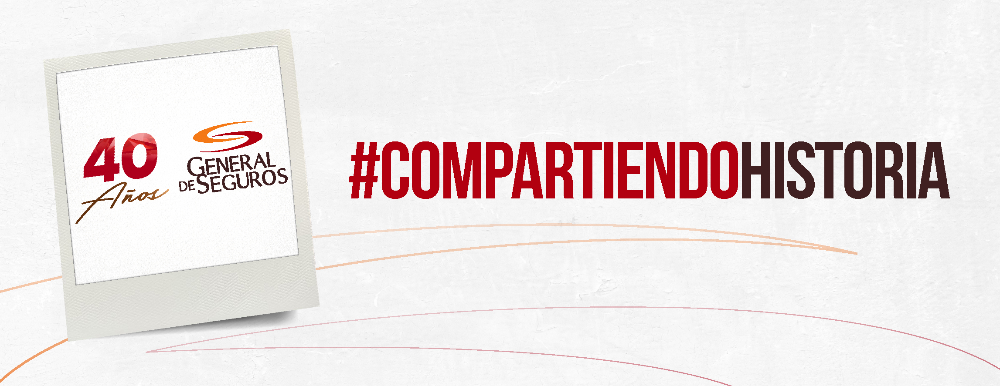
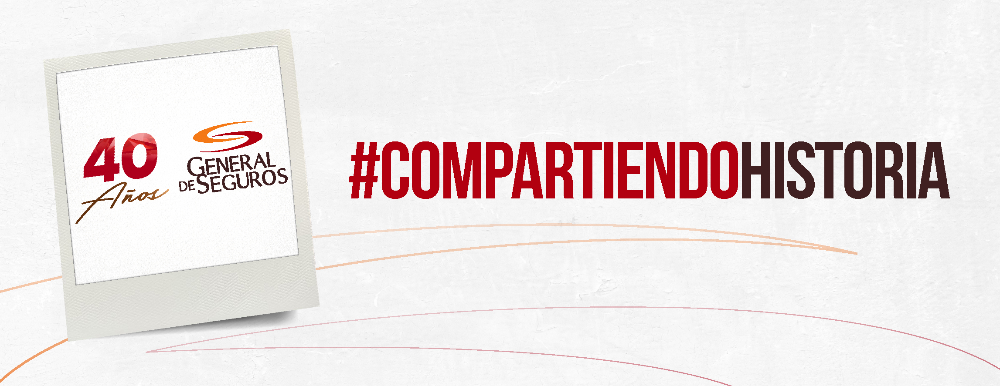
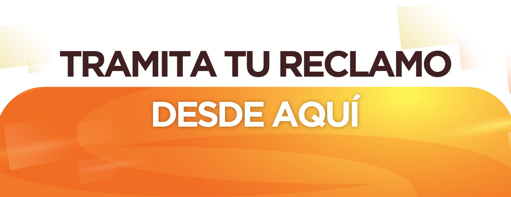
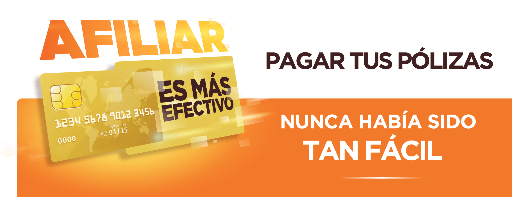
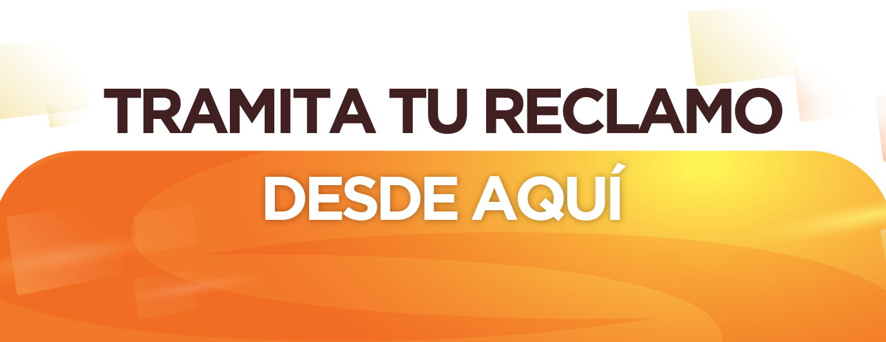
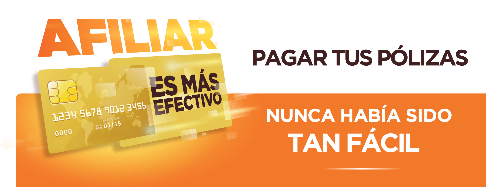

 



¿QUIENES SOMOS?
Con una acertada visión de expansión de sus negocios financieros en Centroamérica y El Caribe, sus principales Dignatarios y Directores, deciden abrir operaciones en República Dominicana en una empresa de Seguros establecida hace más de treinta años “General de Seguros, S.A.”, adquirida con la finalidad de prestar múltiples y eficientes servicios de Seguros Generales, Seguros Personales y Fianzas.
Con la adquisición, se elevó de inmediato el capital a RD$150.000.000,00 totalmente pagado, con la finalidad de desarrollar una plataforma de vanguardia y una alta capacidad de adaptación a las constantes exigencias de los nuevos mercados dominicanos, que sumados a la eficiencia y rapidez en la prestación de servicios, una mayor solidez y capacidad de negociación, y operaciones que la impulsen a posicionarse y liderar el mercado asegurador local.
A la fecha, la dirección de la compañía está a cargo de Milagros de los Santos, quien ejerce el cargo de Presidente del Consejo de Administración. Doña Milagros es reconocida como una profesional de larga trayectoria con un indiscutible conocimiento y liderazgo en el mercado asegurador dominicano, quién con su experiencia y habilidad asume el reto de seguir escalando posiciones para la compañía, a través de la implementación de productos innovadores y un servicio de primera mano que satisfagan las necesidades de asegurados e intermediarios.
VISION Y MISION
VISION:
Ser referente de innovación y confianza del mercado asegurador Dominicano
MISION:
Proveer coberturas de seguros para garantizar tranquilidad, protección y seguridad a nuestros clientes, apoyados por un equipo de colaboradores comprometidos en brindar un servicio eficiente y eficaz, a través de una plataforma innovadora.
VALORES
- HONESTIDAD: Explicamos las políticas de manera efectiva, detallando con precisión las coberturas de las pólizas y el método de indemnización.
- PASIÓN: Realizamos nuestra labor con entusiasmo para lograr que nuestros asegurados y el equipo estén respaldados.
- COMPROMISO: Estamos altamente comprometidos en brindar un servicio extraordinario a nuestros clientes.
- TRANSPARENCIA: Nuestra trayectoria destaca la claridad de nuestro accionar.
- RESPETO: Valoramos con esmero y dedicación la relación con nuestros clientes.
POLITICA DE CALIDAD
General de Seguros, S.A. empresa dedicada a prestar múltiples y eficientes servicios de Seguros Generales, de Personas y Fianzas, cumpliendo con los requisitos legales, que, con un equipo de colaboradores capacitados y comprometidos, está orientada en brindar un servicio eficiente y eficaz, a través de una plataforma innovadora, apoyados en nuestra misión de proveer coberturas de seguros para garantizar tranquilidad, protección y seguridad de nuestros clientes.
Comprometidos con la mejora continua de nuestros procesos adoptando un Sistema de Gestión de la Calidad con el fin de lograr alcanzar el crecimiento de nuestra cartera de manera saludable, lograr la rentabilidad patrimonial y el fortalecimiento de la capitalización anual establecida a través de la innovación de nuestros productos.
Es un compromiso de todos nosotros mejorar de forma continua los procesos para la satisfacción de nuestros clientes externos, internos y demás relacionados.
PLATAFORMA DE SERVICIOS
- Milagros de los Santos:Presidente del Consejo de Administración
- Xiomara Iglesias:Vicepresidente de Reaseguros
- Rafael Rodríguez Coronel:Vicepresidente de Administración
- Ludy González:Vicepresidente de Seguros
- Gerardo Padilla:Vicepresidente de Organización y Métodos
- Carlos Sánchez:Director General de Negocios
- Aida Ruiz:Directora Departamento Técnico
- Yolanda del Rosario:Directora de Recursos Humanos
- Haydée Rodríguez:Directora Legal
- Mairení Marte:Director de Sistemas y Tecnologías
- Héctor Pilarte:Director Financiero
- Samir Marmolejos:Gerente de Reclamaciones
- Marianella Delgado:Gerente de Relaciones Institucionales
- Luis Sierra:Gerente de Cobros
- Melvin Vargas:Gerente de Tecnología
- Carlos Núñez: Gerente de Negocios
¿POR QUE PREFERIRNOS?
- Porque atendemos a nuestros asegurados las 24 horas del día, los 365 días del año, para prestarles todo el apoyo al momento de sufrir una eventualidad dándoles un servicio óptimo y oportuno.
- Porque nuestra experiencia a través de los años en el manejo de todo tipo de riesgos, especialmente los de vehículos de motor, nos permite asesorarle correctamente.
- Por nuestra reconocida solvencia moral y económica, que nos ha mantenido por más de treinta (30) años en el mercado asegurador dominicano.
- Porque nos esmeramos en ofrecer a nuestros clientes un servicio personalizado, por cualquier vía que nos contacten
- Porque somos transparentes en nuestras negociaciones y suministramos al cliente toda la información necesaria para evitar inconvenientes al momento de una reclamación.
- Porque cumplimos en forma rápida y eficiente los compromisos contraídos en la suscripción de la póliza, brindando un trato personalizado y coberturas adecuadas para un respaldo integral.
AFILIACIONES Y REPRESENTACIONES
¿QUIENES NOS RESPALDAN?